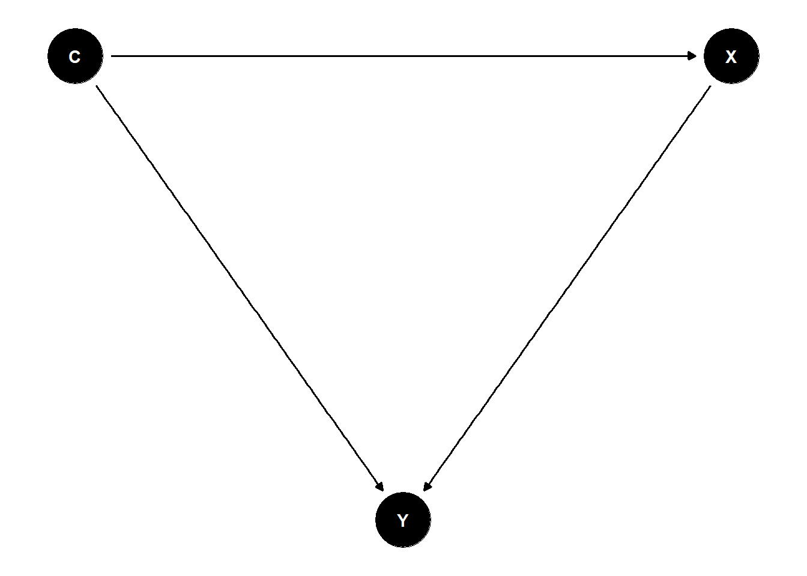
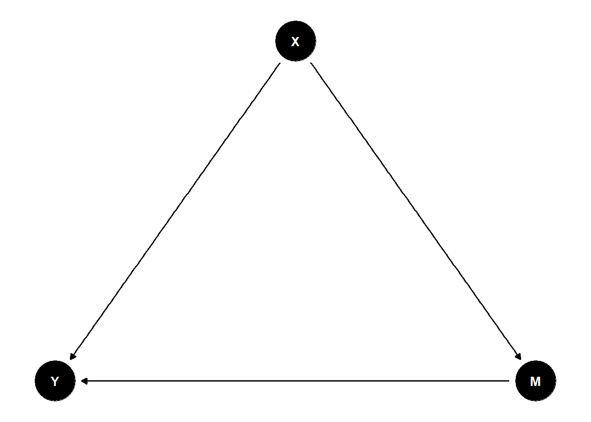
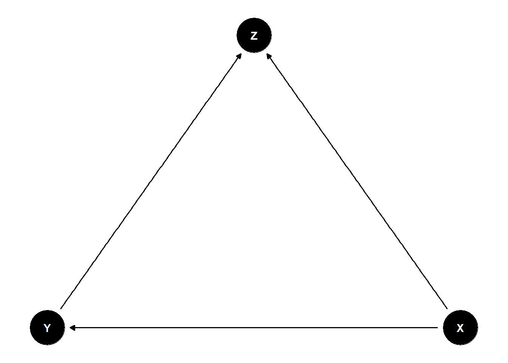

library(tidyverse)
library(dagitty)
library(ggdag)
set.seed(42)
theme_set(theme_minimal(base_size = 12))Week 3, Session 3 — DAGs with dagitty and ggdag
Course 3 — Biostatistics Courses
Note
Workflow lab using the variant template: Goal → Approach → Execution → Check → Report.
Learning objectives
- Express a causal scenario as a directed acyclic graph (DAG).
- Identify confounders, mediators, and colliders from a DAG.
- Use
dagitty::adjustmentSets()to find sufficient adjustment sets.
Prerequisites
Conceptual knowledge of confounding.
Background
A DAG is a set of variables joined by arrows that encode assumed causal directions. The graph distinguishes three kinds of third variable on a path between exposure and outcome: a confounder is a common cause; a mediator lies on the causal path from exposure to outcome; a collider is a common effect of two variables on the path. The practical upshot is that adjusting for a confounder reduces bias, adjusting for a mediator removes part of the effect you are trying to estimate, and adjusting for a collider creates bias where none existed.
dagitty and ggdag let you declare a DAG in text, visualise it, and then query it for adjustment sets — the minimal variable sets that block all back-door paths from exposure to outcome without opening new ones. The right adjustment set depends on the question. For the total effect of X on Y, you want to close all back-door paths but leave mediators alone; for the direct effect, you also block mediators.
M-bias is the classic example of collider adjustment: conditioning on a variable that is a common effect of an unmeasured cause of X and an unmeasured cause of Y opens a path and biases the estimate. This is why “adjust for everything” is bad advice.
Setup
1. Goal
Write a confounder, mediator, and collider scenario as DAGs; ask dagitty which variables to adjust for.
2. Approach
dag1 <- dagitty('dag {
X -> Y
C -> X
C -> Y
X [exposure]
Y [outcome]
}')
dag2 <- dagitty('dag {
X -> M -> Y
X -> Y
X [exposure]
Y [outcome]
}')
dag3 <- dagitty('dag {
X -> Z
Y -> Z
X -> Y
X [exposure]
Y [outcome]
}')
ggdag(dag1) + theme_dag()
ggdag(dag2) + theme_dag()
ggdag(dag3) + theme_dag()
3. Execution
adjustmentSets(dag1, exposure = "X", outcome = "Y",
effect = "total"){ C }# Total vs direct effect when a mediator exists
adjustmentSets(dag2, exposure = "X", outcome = "Y",
effect = "total") {}adjustmentSets(dag2, exposure = "X", outcome = "Y",
effect = "direct"){ M }# Collider: do not adjust for Z
adjustmentSets(dag3, exposure = "X", outcome = "Y") {}4. Check
Simulate dag1 and verify that adjusting for C recovers the true effect while failing to adjust biases it.
n <- 2000
c_ <- rnorm(n)
x <- 0.6 * c_ + rnorm(n)
y <- 0.4 * x + 0.7 * c_ + rnorm(n)
df <- tibble(c_, x, y)
coef(lm(y ~ x, data = df))["x"] x
0.7042359 coef(lm(y ~ x + c_, data = df))["x"] x
0.3866581 The unadjusted coefficient is inflated; the adjusted one is close to 0.4 as simulated.
5. Report
A directed acyclic graph is a compact, testable statement of causal assumptions. Dagitty identified the confounder C as the required adjustment set in the first DAG; the collider Z in the third DAG is explicitly not in any adjustment set, and conditioning on it would introduce selection bias.
Draw the M-bias example on the board during lecture; it is the single clearest argument against automatic variable-inclusion procedures.
Common pitfalls
- Listing “every variable we measured” as the adjustment set.
- Adjusting for a mediator and calling the result a total effect.
- Using automated variable selection on observational data without a DAG.
- Drawing the DAG after the analysis.
Further reading
- Textor J et al. (2016), Robust causal inference using directed acyclic graphs: the R package ‘dagitty’.
- Hernán MA, Robins JM. Causal Inference: What If.
- Greenland S, Pearl J, Robins JM (1999), Causal diagrams for epidemiologic research.
Session info
sessionInfo()R version 4.5.2 (2025-10-31 ucrt)
Platform: x86_64-w64-mingw32/x64
Running under: Windows 11 x64 (build 26200)
Matrix products: default
LAPACK version 3.12.1
locale:
[1] LC_COLLATE=English_Germany.utf8 LC_CTYPE=English_Germany.utf8
[3] LC_MONETARY=English_Germany.utf8 LC_NUMERIC=C
[5] LC_TIME=English_Germany.utf8
time zone: Europe/Berlin
tzcode source: internal
attached base packages:
[1] stats graphics grDevices utils datasets methods base
other attached packages:
[1] ggdag_0.2.13 dagitty_0.3-4 lubridate_1.9.5 forcats_1.0.1
[5] stringr_1.6.0 dplyr_1.2.0 purrr_1.2.2 readr_2.2.0
[9] tidyr_1.3.2 tibble_3.3.1 ggplot2_4.0.3 tidyverse_2.0.0
loaded via a namespace (and not attached):
[1] viridis_0.6.5 generics_0.1.4 stringi_1.8.7 hms_1.1.4
[5] digest_0.6.39 magrittr_2.0.4 evaluate_1.0.5 grid_4.5.2
[9] timechange_0.4.0 RColorBrewer_1.1-3 fastmap_1.2.0 jsonlite_2.0.0
[13] ggrepel_0.9.8 gridExtra_2.3 viridisLite_0.4.3 scales_1.4.0
[17] tweenr_2.0.3 cli_3.6.5 graphlayouts_1.2.3 rlang_1.2.0
[21] polyclip_1.10-7 tidygraph_1.3.1 cachem_1.1.0 withr_3.0.2
[25] yaml_2.3.12 otel_0.2.0 tools_4.5.2 tzdb_0.5.0
[29] memoise_2.0.1 boot_1.3-32 curl_7.1.0 vctrs_0.7.3
[33] R6_2.6.1 lifecycle_1.0.5 V8_8.2.0 htmlwidgets_1.6.4
[37] MASS_7.3-65 ggraph_2.2.2 pkgconfig_2.0.3 pillar_1.11.1
[41] gtable_0.3.6 glue_1.8.0 Rcpp_1.1.1-1.1 ggforce_0.5.0
[45] xfun_0.57 tidyselect_1.2.1 knitr_1.51 farver_2.1.2
[49] htmltools_0.5.9 igraph_2.3.0 labeling_0.4.3 rmarkdown_2.31
[53] compiler_4.5.2 S7_0.2.2